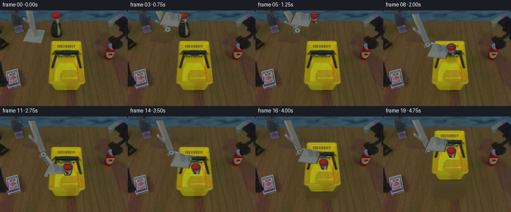
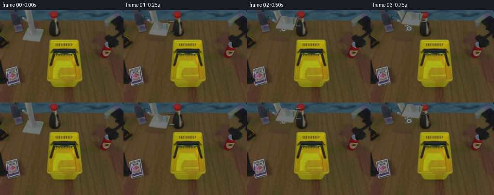
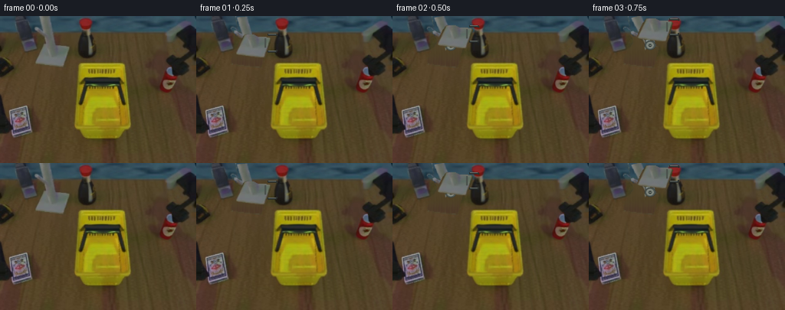
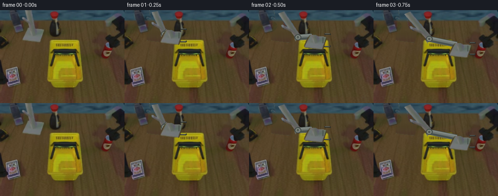
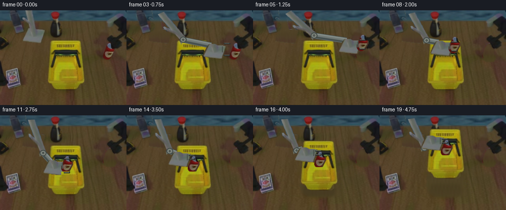

CODING AGENTS AS PIXEL WORLD MODELS
traex/GPT-6.1-Sol · common50_0047
点击播放 · 原生 RGB 像素
逐轮保存的候选
回放视频、检查图与代码变化。
每份候选均可单独播放。实际图片检查记录在下方工具轨迹中。
候选 01播放与检查图
点击播放 · 原生 RGB 像素


展开代码变化
--- 上一保存版本
+++ 本次保存版本
@@ -0,0 +1,214 @@
+from pathlib import Path
+import math
+import numpy as np
+from PIL import Image, ImageDraw, ImageFilter
+import artifact_io
+
+ROOT = Path(__file__).resolve().parent
+W,H = 256,192
+S = 3
+src = np.array(Image.open(ROOT/'first_frame.png').convert('RGB'))
+
+def mask_poly(points, feather=0):
+ im=Image.new('L',(W,H),0)
+ ImageDraw.Draw(im).polygon(points,fill=255)
+ if feather: im=im.filter(ImageFilter.GaussianBlur(feather))
+ return np.asarray(im)/255.
+
+upper_pts=[(51,-3),(65,-3),(67,14),(69,25),(72,37),(57,39),(58,31),(56,27),(53,24),(48,21),(45,17),(46,15),(49,15),(55,20),(54,13)]
+body_pts=[(57,36),(69,36),(73,38),(85,39),(90,40),(91,42),(90,46),(88,52),(86,60),(85,63),(83,66),(70,65),(54,63),(48,62),(46,61),(45,59),(46,56),(49,48),(53,41)]
+can_pts=[(106,3),(110,2),(116,2),(119,4),(121,7),(121,13),(120,18),(118,24),(114,26),(109,23),(106,19),(104,14),(103,10),(103,6)]
+basket_pts=[(104,60),(160,60),(164,62),(166,81),(167,98),(169,117),(171,139),(170,145),(166,149),(164,156),(159,160),(117,160),(110,158),(107,151),(101,150),(96,147),(94,144),(95,130),(96,114),(99,93),(100,76),(101,64)]
+upper=mask_poly(upper_pts,.25)
+body=mask_poly(body_pts,.25)
+can=mask_poly(can_pts,.2)
+basket=mask_poly(basket_pts,.25)
+arm_mask=np.maximum(upper,body)
+can_shadow=mask_poly([(107,20),(119,20),(121,24),(126,27),(127,44),(125,50),(122,54),(113,56),(106,55),(101,50),(99,44),(99,34),(101,27)],1.2)
+basket_floor=mask_poly([(95,142),(170,142),(177,155),(173,165),(157,165),(145,169),(112,166),(94,155)],3)
+
+# Reconstruct only the disoccluded table/background using its original local grain.
+# No external textures or learned synthesis are used.
+yy,xx=np.indices((H,W))
+clone=src[yy,180+((xx*7+yy//13)%24)].astype(float)
+# A little boundary-consistent diffusion makes a clean, unobtrusive plate.
+def fill_region(original, mask):
+ a=original.astype(float).copy()
+ select=mask>.015
+ a[select]=clone[select]
+ # keep the small-scale wood texture, match slow local illumination at edges
+ for _ in range(90):
+ mean=(np.roll(a,1,0)+np.roll(a,-1,0)+np.roll(a,1,1)+np.roll(a,-1,1))/4
+ a[select]=.90*mean[select]+.10*clone[select]
+ out=original*(1-mask[...,None])+a*mask[...,None]
+ return out
+clean_arm=fill_region(src,arm_mask)
+clean_can=fill_region(src,np.maximum(can,can_shadow))
+all_clean=fill_region(src,np.maximum.reduce([arm_mask,can,can_shadow,basket,basket_floor]))
+
+# Original rigid housing, can, and basket textures.
+def sprite(mask):
+ rgba=np.dstack([src,(mask*255).astype(np.uint8)])
+ return Image.fromarray(rgba,'RGBA').resize((W*S,H*S),Image.Resampling.BICUBIC)
+upper_sprite=sprite(upper)
+body_sprite=sprite(body)
+can_sprite=sprite(can)
+basket_sprite=sprite(basket)
+
+def shifted(img,dx,dy):
+ return img.transform((W*S,H*S),Image.Transform.AFFINE,(1,0,-dx*S,0,1,-dy*S),Image.Resampling.BICUBIC)
+
+def upper_link(e):
+ # Orthographic projection of a fixed length, fixed diameter metal link.
+ # This affine map changes projected length only; its 3D length is invariant.
+ a=np.array([58.,-10.]); b=np.array([65.,36.]);
+ v=b-a; uv=v/np.linalg.norm(v); nv=np.array([-uv[1],uv[0]])
+ vv=np.asarray(e[:2])-a; u2=vv/np.linalg.norm(vv); n2=np.array([-u2[1],u2[0]])
+ M=np.column_stack([vv/np.linalg.norm(v),n2])@np.column_stack([uv,nv]).T
+ inv=np.linalg.inv(M); off=a-inv@a
+ coeff=(inv[0,0],inv[0,1],off[0]*S,inv[1,0],inv[1,1],off[1]*S)
+ return upper_sprite.transform((W*S,H*S),Image.Transform.AFFINE,coeff,Image.Resampling.BICUBIC)
+
+anchor=np.array([58.,-10.,0.])
+L1,L2=95.,90.
+e0=np.array([65.,36.,math.sqrt(95**2-7**2-46**2)])
+w0=np.array([61.,39.,e0[2]+math.sqrt(90**2-4**2-3**2)])
+D=w0-anchor; d=np.linalg.norm(D); q=(L1*L1-L2*L2+d*d)/(2*d)
+pref=e0-anchor-q*D/d; pref/=np.linalg.norm(pref)
+
+def solve_elbow(w,depth):
+ end=np.array([w[0]-7,w[1]-14,depth])
+ D=end-anchor; d=np.linalg.norm(D)
+ axis=D/d
+ q=(L1*L1-L2*L2+d*d)/(2*d)
+ h=math.sqrt(max(0,L1*L1-q*q))
+ side=pref-np.dot(pref,axis)*axis; side/=np.linalg.norm(side)
+ e=anchor+q*axis+h*side
+ return e,end
+
+# Fixed geometry, shaded facets and original-camera-sized metal end joints.
+def point(p): return tuple(int(round(float(v)*S)) for v in p)
+def line(draw,pts,fill,width): draw.line([point(p) for p in pts],fill=fill,width=max(1,round(width*S)),joint='curve')
+def ellipse(draw,box,fill,outline=None,width=1):
+ draw.ellipse(tuple(round(v*S) for v in box),fill=fill,outline=outline,width=round(width*S))
+def connector(layer,e,w,weight=1.):
+ draw=ImageDraw.Draw(layer)
+ a=np.asarray(e[:2]); b=np.asarray(w[:2]);v=b-a;length=np.linalg.norm(v)
+ if length<4:return
+ u=v/length;n=np.array([-u[1],u[0]])
+ ends=[a-6*n,b-6*n,b+6*n,a+6*n]
+ draw.polygon([point(p) for p in ends],fill=(87,96,94,255))
+ # Highlights are straight axial bands, not bending surfaces.
+ line(draw,[a-3.5*n,b-3.5*n],(131,139,133,255),3.1)
+ line(draw,[a-1*n,b-1*n],(112,120,116,255),3.2)
+ line(draw,[a+3.2*n,b+3.2*n],(66,76,73,255),2.4)
+ line(draw,[a-6*n,b-6*n],(59,67,66,255),.8)
+ # Rigid bolted elbow hub, same diameter in every pose.
+ ex,ey=a
+ ellipse(draw,(ex-7,ey-6,ex+7,ey+6),(80,88,84,255),(54,62,58,255),.65)
+ ellipse(draw,(ex-4.5,ey-4,ex+4.5,ey+4),(117,124,116,255),(146,150,141,255),.7)
+ ellipse(draw,(ex-1.8,ey-1.8,ex+1.8,ey+1.8),(54,61,58,255))
+ line(draw,[(ex-1,ey),(ex+1,ey)],(154,157,145,255),.55)
+
+def shadow(canvas,canxy=None,lift=0):
+ im=Image.new('RGBA',canvas.size,(0,0,0,0));d=ImageDraw.Draw(im)
+ if canxy is not None:
+ cx,cy=canxy
+ # Airborne contact shadow fades and softens, separately from the rigid can.
+ ellipse(d,(cx-8,cy+19,cx+12,cy+32),(15,12,9,36))
+ if lift>0:
+ d.rounded_rectangle(tuple(round(v*S) for v in (101,140,166,164)),radius=8*S,fill=(20,16,10,int(44-0.4*lift)))
+ im=im.filter(ImageFilter.GaussianBlur((2.2+lift*.035)*S))
+ return Image.alpha_composite(canvas,im)
+
+def fingers(canvas,G,gap,opacity=255):
+ d=ImageDraw.Draw(canvas)
+ x,y=G
+ # Two rigid parallel steel jaws; only the jaw spacing is actuated.
+ for sgn in [-1,1]:
+ fy=y+sgn*gap
+ line(d,[(x-6,fy),(x+6,fy)],(38,43,42,opacity),2.5)
+ line(d,[(x-5,fy-.6),(x+5,fy-.6)],(137,144,136,opacity),.8)
+ line(d,[(x+6,fy),(x+6,fy-sgn*2)],(45,48,44,opacity),2.0)
+ # A small fixed wrist flange aligned with the grasp axis.
+ line(d,[(x-9,y-6),(x-9,y+6)],(75,82,77,opacity),2.2)
+
+# Every frame corresponds to a deliberate manipulation phase, with settling holds.
+# The can is rigidly attached only between grasp and release; the entire loaded
+# basket translates as one body once the handle is grasped.
+poses=[
+ ((93,47),None,12,0,173),
+ ((99,35),None,11,0,168),
+ ((106,23),None,10,0,166),
+ ((111,14),None,10,0,163),
+ ((111,14),(111,10),7,0,163),
+ ((117,14),(117,10),7,0,160),
+ ((124,33),(124,29),7,0,151),
+ ((131,56),(131,52),7,0,143),
+ ((135,78),(135,74),7,0,133),
+ ((135,98),(135,94),7,0,120),
+ ((135,106),(135,102),7,0,113),
+ ((135,106),(135,102),11,0,113),
+ ((128,85),(135,102),11,0,126),
+ ((132,82),(135,102),8,0,127),
+ ((132,85),(135,102),4,0,126),
+ ((132,83),(135,100),4,2,127),
+ ((132,76),(135,93),4,9,128),
+ ((132,65),(135,82),4,20,130),
+ ((132,54),(135,71),4,31,132),
+ ((132,52),(135,69),4,33,133),
+]
+
+frames=[src.copy()]
+for i in range(1,20):
+ G,cxy,gap,lift,depth=poses[i]
+ Wpos=np.array([G[0]-25.,G[1]+6.])
+ # Original can and basket stay exactly intact until physically moved.
+ bg=clean_arm.copy()
+ if i>=5:
+ removal=np.maximum(can,can_shadow)
+ bg=bg*(1-removal[...,None])+clean_can*removal[...,None]
+ if lift>0:
+ removal=np.maximum(basket,basket_floor)
+ bg=bg*(1-removal[...,None])+all_clean*removal[...,None]
+ canvas=Image.fromarray(np.uint8(np.clip(bg,0,255)),'RGB').convert('RGBA').resize((W*S,H*S),Image.Resampling.BICUBIC)
+ if lift>0:
+ canvas=shadow(canvas,lift=lift)
+ canvas.alpha_composite(shifted(basket_sprite,0,-lift))
+ if i>=5 and i<=9:
+ canvas=shadow(canvas,canxy=cxy)
+ e,end=solve_elbow(Wpos,depth)
+ canvas.alpha_composite(upper_link(e))
+ metal=Image.new('RGBA',canvas.size,(0,0,0,0))
+ connector(metal,e,end)
+ canvas.alpha_composite(metal)
+ canvas.alpha_composite(shifted(body_sprite,Wpos[0]-68,Wpos[1]-53))
+ if i>=5:
+ canvas.alpha_composite(shifted(can_sprite,cxy[0]-111,cxy[1]-10))
+ # On placement the front wall is a real occluder, not an object deformation.
+ # Can base is just behind the lip; its red body remains clearly visible.
+ if i>=10:
+ front_mask=basket*mask_poly([(94,116),(171,116),(174,162),(94,162)])
+ front=sprite(front_mask)
+ canvas.alpha_composite(shifted(front,0,-lift))
+ fingers(canvas,G,gap)
+ out=np.array(canvas.convert('RGB').resize((W,H),Image.Resampling.LANCZOS),dtype=np.uint8)
+ # Freeze pixels well away from all moving geometry at native resolution.
+ # This also preserves the unchanging camera, horizon and static hardware.
+ static=np.ones((H,W),bool)
+ static[:174,42:177]=False
+ static[can_shadow>.01]=False
+ out[static]=src[static]
+ frames.append(out)
+ Image.fromarray(out).save(ROOT/'.tmp'/f'candidate_{i:02d}.png')
+frames=np.asarray(frames,dtype=np.uint8)
+artifact_io.save(frames,ROOT)
+# Numerical contract and kinematic checks, without visual image tools.
+assert np.array_equal(frames[0],src)
+errors=[]
+for G,_,_,_,depth in poses[1:]:
+ wp=np.array([G[0]-25.,G[1]+6.]); e,end=solve_elbow(wp,depth)
+ errors.append([abs(np.linalg.norm(e-anchor)-L1),abs(np.linalg.norm(end-e)-L2)])
+print('Saved',frames.shape,frames.dtype)
+print('Maximum rigid-link length error:',float(np.max(errors)))
+print('Mean consecutive frame RGB differences:',np.round(np.abs(np.diff(frames.astype(float),axis=0)).mean((1,2,3)),2))
候选 02播放与检查图
点击播放 · 原生 RGB 像素

展开代码变化
--- 上一保存版本
+++ 本次保存版本
@@ -38,7 +38,8 @@
a[select]=clone[select]
# keep the small-scale wood texture, match slow local illumination at edges
for _ in range(90):
- mean=(np.roll(a,1,0)+np.roll(a,-1,0)+np.roll(a,1,1)+np.roll(a,-1,1))/4
+ padded=np.pad(a,((1,1),(1,1),(0,0)),mode='edge')
+ mean=(padded[:-2,1:-1]+padded[2:,1:-1]+padded[1:-1,:-2]+padded[1:-1,2:])/4
a[select]=.90*mean[select]+.10*clone[select]
out=original*(1-mask[...,None])+a*mask[...,None]
return out
@@ -49,7 +50,7 @@
# Original rigid housing, can, and basket textures.
def sprite(mask):
rgba=np.dstack([src,(mask*255).astype(np.uint8)])
- return Image.fromarray(rgba,'RGBA').resize((W*S,H*S),Image.Resampling.BICUBIC)
+ return Image.fromarray(rgba).resize((W*S,H*S),Image.Resampling.BICUBIC)
upper_sprite=sprite(upper)
body_sprite=sprite(body)
can_sprite=sprite(can)
@@ -171,7 +172,7 @@
if lift>0:
removal=np.maximum(basket,basket_floor)
bg=bg*(1-removal[...,None])+all_clean*removal[...,None]
- canvas=Image.fromarray(np.uint8(np.clip(bg,0,255)),'RGB').convert('RGBA').resize((W*S,H*S),Image.Resampling.BICUBIC)
+ canvas=Image.fromarray(np.uint8(np.clip(bg,0,255))).convert('RGBA').resize((W*S,H*S),Image.Resampling.BICUBIC)
if lift>0:
canvas=shadow(canvas,lift=lift)
canvas.alpha_composite(shifted(basket_sprite,0,-lift))
候选 03播放与检查图
点击播放 · 原生 RGB 像素


展开代码变化
--- 上一保存版本
+++ 本次保存版本
@@ -17,14 +17,14 @@
upper_pts=[(51,-3),(65,-3),(67,14),(69,25),(72,37),(57,39),(58,31),(56,27),(53,24),(48,21),(45,17),(46,15),(49,15),(55,20),(54,13)]
body_pts=[(57,36),(69,36),(73,38),(85,39),(90,40),(91,42),(90,46),(88,52),(86,60),(85,63),(83,66),(70,65),(54,63),(48,62),(46,61),(45,59),(46,56),(49,48),(53,41)]
-can_pts=[(106,3),(110,2),(116,2),(119,4),(121,7),(121,13),(120,18),(118,24),(114,26),(109,23),(106,19),(104,14),(103,10),(103,6)]
+can_pts=[(219,66),(223,67),(226,70),(227,74),(230,77),(232,79),(232,83),(228,92),(225,97),(221,100),(215,99),(211,96),(209,93),(209,87),(212,79),(215,72),(217,69)]
basket_pts=[(104,60),(160,60),(164,62),(166,81),(167,98),(169,117),(171,139),(170,145),(166,149),(164,156),(159,160),(117,160),(110,158),(107,151),(101,150),(96,147),(94,144),(95,130),(96,114),(99,93),(100,76),(101,64)]
upper=mask_poly(upper_pts,.25)
body=mask_poly(body_pts,.25)
can=mask_poly(can_pts,.2)
basket=mask_poly(basket_pts,.25)
arm_mask=np.maximum(upper,body)
-can_shadow=mask_poly([(107,20),(119,20),(121,24),(126,27),(127,44),(125,50),(122,54),(113,56),(106,55),(101,50),(99,44),(99,34),(101,27)],1.2)
+can_shadow=mask_poly([(211,88),(234,88),(236,97),(231,105),(216,105),(207,100)],1.5)
basket_floor=mask_poly([(95,142),(170,142),(177,155),(173,165),(157,165),(145,169),(112,166),(94,155)],3)
# Reconstruct only the disoccluded table/background using its original local grain.
@@ -116,7 +116,7 @@
if canxy is not None:
cx,cy=canxy
# Airborne contact shadow fades and softens, separately from the rigid can.
- ellipse(d,(cx-8,cy+19,cx+12,cy+32),(15,12,9,36))
+ ellipse(d,(cx-9,cy+14,cx+12,cy+23),(15,12,9,36))
if lift>0:
d.rounded_rectangle(tuple(round(v*S) for v in (101,140,166,164)),radius=8*S,fill=(20,16,10,int(44-0.4*lift)))
im=im.filter(ImageFilter.GaussianBlur((2.2+lift*.035)*S))
@@ -138,20 +138,20 @@
# The can is rigidly attached only between grasp and release; the entire loaded
# basket translates as one body once the handle is grasped.
poses=[
- ((93,47),None,12,0,173),
- ((99,35),None,11,0,168),
- ((106,23),None,10,0,166),
- ((111,14),None,10,0,163),
- ((111,14),(111,10),7,0,163),
- ((117,14),(117,10),7,0,160),
- ((124,33),(124,29),7,0,151),
- ((131,56),(131,52),7,0,143),
- ((135,78),(135,74),7,0,133),
- ((135,98),(135,94),7,0,120),
- ((135,106),(135,102),7,0,113),
- ((135,106),(135,102),11,0,113),
- ((128,85),(135,102),11,0,126),
- ((132,82),(135,102),8,0,127),
+ ((93,47),None,13,0,173),
+ ((121,52),None,13,0,160),
+ ((161,62),None,13,0,139),
+ ((203,79),None,12,0,101),
+ ((220,86),(220,86),9,0,81),
+ ((221,69),(221,69),9,0,93),
+ ((207,48),(207,48),9,0,121),
+ ((179,53),(179,53),9,0,137),
+ ((151,73),(151,73),9,0,138),
+ ((135,91),(135,91),9,0,127),
+ ((135,102),(135,102),9,0,114),
+ ((135,102),(135,102),14,0,114),
+ ((127,80),(135,102),14,0,129),
+ ((132,81),(135,102),8,0,128),
((132,85),(135,102),4,0,126),
((132,83),(135,100),4,2,127),
((132,76),(135,93),4,9,128),
@@ -185,11 +185,11 @@
canvas.alpha_composite(metal)
canvas.alpha_composite(shifted(body_sprite,Wpos[0]-68,Wpos[1]-53))
if i>=5:
- canvas.alpha_composite(shifted(can_sprite,cxy[0]-111,cxy[1]-10))
+ canvas.alpha_composite(shifted(can_sprite,cxy[0]-220,cxy[1]-86))
# On placement the front wall is a real occluder, not an object deformation.
# Can base is just behind the lip; its red body remains clearly visible.
if i>=10:
- front_mask=basket*mask_poly([(94,116),(171,116),(174,162),(94,162)])
+ front_mask=basket*mask_poly([(124,114),(148,114),(149,134),(123,134)])
front=sprite(front_mask)
canvas.alpha_composite(shifted(front,0,-lift))
fingers(canvas,G,gap)
@@ -197,7 +197,7 @@
# Freeze pixels well away from all moving geometry at native resolution.
# This also preserves the unchanging camera, horizon and static hardware.
static=np.ones((H,W),bool)
- static[:174,42:177]=False
+ static[:174,42:241]=False
static[can_shadow>.01]=False
out[static]=src[static]
frames.append(out)
候选 04播放与检查图
点击播放 · 原生 RGB 像素

展开代码变化
--- 上一保存版本 +++ 本次保存版本 @@ -17,7 +17,7 @@ upper_pts=[(51,-3),(65,-3),(67,14),(69,25),(72,37),(57,39),(58,31),(56,27),(53,24),(48,21),(45,17),(46,15),(49,15),(55,20),(54,13)] body_pts=[(57,36),(69,36),(73,38),(85,39),(90,40),(91,42),(90,46),(88,52),(86,60),(85,63),(83,66),(70,65),(54,63),(48,62),(46,61),(45,59),(46,56),(49,48),(53,41)] -can_pts=[(219,66),(223,67),(226,70),(227,74),(230,77),(232,79),(232,83),(228,92),(225,97),(221,100),(215,99),(211,96),(209,93),(209,87),(212,79),(215,72),(217,69)] +can_pts=[(219,66),(223,67),(223,70),(226,71),(226,74),(229,77),(231,78),(231,84),(229,90),(226,95),(224,98),(220,100),(215,99),(212,97),(210,94),(209,91),(210,87),(211,83),(211,79),(213,75),(215,71),(217,68)] basket_pts=[(104,60),(160,60),(164,62),(166,81),(167,98),(169,117),(171,139),(170,145),(166,149),(164,156),(159,160),(117,160),(110,158),(107,151),(101,150),(96,147),(94,144),(95,130),(96,114),(99,93),(100,76),(101,64)] upper=mask_poly(upper_pts,.25) body=mask_poly(body_pts,.25)
候选 05播放与检查图
可观测工具轨迹
实际执行的命令与返回图片。
命令 1exit 0
/bin/bash -lc "ls -la && cat prompt.txt && printf '\\n---RULES---\\n' && cat GENERATION_RULES.md"
命令 2exit 0
/bin/bash -lc "cat task_spec.json && cat artifact_io.py && python - <<'PY'
from PIL import Image
import numpy as np
im=np.array(Image.open('first_frame.png').convert('RGB')); print(im.shape)
# color-labeled scene map at 4px resolution
for y in range(0,192,4):
s=''
for x in range(0,256,4):
r,g,b=im[y:y+4,x:x+4].mean((0,1))
if r>g*1.45 and r>b*1.3 and r>70:c='R'
elif r>130 and g>105 and b<g*.63:c='Y'
elif b>r*1.2 and b>g*1.05:c='B'
elif max(r,g,b)<45:c='#'
elif max(r,g,b)<85:c='o'
elif max(r,g,b)<125:c=':'
elif max(r,g,b)<165:c='.'
elif max(r,g,b)<205:c=' '
else:c='W'
s+=c
print(f'{y:3} {s}')
Image.fromarray(im).save('.tmp/input.png')
PY"命令 3exit 0
/bin/bash -lc "python - <<'PY'
from PIL import Image
import numpy as np
from collections import Counter
im=np.array(Image.open('first_frame.png'))
print('colors',Counter(map(tuple,(im//24).reshape(-1,3))).most_common(18))
# red components
m=(im[:,:,0].astype(float)>im[:,:,1]*1.5)&(im[:,:,0]>im[:,:,2]*1.25)&(im[:,:,0]>65)
seen=np.zeros(m.shape,bool)
for y,x in zip(*np.where(m)):
if seen[y,x]:continue
st=[(y,x)];seen[y,x]=1; pix=[]
while st:
a,b=st.pop();pix.append((a,b))
for aa,bb in ((a-1,b),(a+1,b),(a,b-1),(a,b+1)):
if 0<=aa<192 and 0<=bb<256 and m[aa,bb] and not seen[aa,bb]:seen[aa,bb]=1;st.append((aa,bb))
if len(pix)>10:
ar=np.array(pix); print(len(pix), ar.min(0)[::-1],ar.max(0)[::-1],np.round(ar.mean(0)[::-1],1),np.round(im[ar[:,0],ar[:,1]].mean(0),1))
print('map full 2x2')
for y in range(0,192,2):
s=''
for x in range(0,256,2):
r,g,b=im[y:y+2,x:x+2].mean((0,1))
if r>g*1.45 and r>b*1.3 and r>70:c='R'
elif r>110 and g>88 and b<g*.65:c='Y'
elif b>r*1.2 and b>g*1.05:c='b'
elif max(r,g,b)<35:c='#'
elif max(r,g,b)<60:c='o'
elif max(r,g,b)<90:c=':'
elif max(r,g,b)<120:c='-'
elif max(r,g,b)<155:c='+'
elif max(r,g,b)<190:c='.'
elif max(r,g,b)<220:c=' '
else:c='W'
s+=c
print(f'{y:3} {s}')
PY"命令 4exit 0
/bin/bash -lc "python - <<'PY'
import numpy as np
from PIL import Image
im=np.array(Image.open('first_frame.png')); print(Image.open('first_frame.png').info)
# map luminance with red,yellow,cyan, metallic labels and background blank identified
for region in [(85,0,130,59),(195,60,240,110),(35,0,95,75),(0,105,55,161),(93,55,173,163)]:
x0,y0,x1,y1=region;print('\\nREGION',region)
for y in range(y0,y1):
s=''
for x in range(x0,x1):
r,g,b=map(float,im[y,x]);v=max(r,g,b)
if abs(r-80)<10 and abs(g-65)<9 and abs(b-45)<9:c=' '
elif r>g*1.4 and r>b*1.25 and r>65:c='R'
elif r>100 and g>80 and b<g*.65:c='Y'
elif b>r*1.2 and b>g*1.05:c='B'
elif v<22:c='#'
elif v<40:c='O'
elif v<60:c='o'
elif v<80:c=':'
elif v<100:c='-'
elif v<120:c='='
elif v<140:c='+'
elif v<170:c='*'
elif v<200:c='.'
elif v<230:c='w'
else:c='W'
s+=c
print(f'{y:3} {s}')
PY"命令 5exit 0
/bin/bash -lc "python - <<'PY'
from PIL import Image
import numpy as np
im=np.array(Image.open('first_frame.png'))
for x,y in [(110,7),(110,12),(111,20),(111,25),(111,40),(119,30),(65,5),(65,40),(80,45),(75,59),(215,79),(223,80),(215,95),(221,69),(220,86),(210,82),(220,103),(40,135),(15,170),(135,175),(80,90),(190,50),(130,70),(135,100),(130,140),(55,100)]:print((x,y),im[y,x])
# high resolution crop map with background by saturated red except brown
chars=' .,:;irsXA253hMHGS#9B&@'
for region in [(35,0,135,66),(201,59,240,110)]:
x0,y0,x1,y1=region;print('REGION',region)
for y in range(y0,y1):
st=''
for x in range(x0,x1):
r,g,b=map(float,im[y,x]);v=.3*r+.59*g+.11*b
if r>1.8*g and r>1.6*b and r>65:c='R'
elif r>100 and g>80 and b<.65*g:c='Y'
elif b>1.2*r and b>g*1.05:c='b'
else:c=chars[min(int(v/256*len(chars)),len(chars)-1)]
st+=c
print(f'{y:3} {st}')
PY"命令 6exit 0
/bin/bash -lc "python - <<'PY'
import numpy as np
from PIL import Image
im=np.array(Image.open('first_frame.png'))
# right-side top object expanded view luminance/color
chars=' .,:;irsXA253hMHGS#9B&@'
for y in range(8,81):
st=''
for x in range(208,256):
r,g,b=map(float,im[y,x]);v=.3*r+.59*g+.11*b
if r>1.8*g and r>1.6*b and r>65:c='R'
elif b>1.2*r and b>g*1.05:c='b'
else:c=chars[min(int(v/256*len(chars)),len(chars)-1)]
st+=c
print(f'{y:3} {st}')
PY"命令 7exit 0
/bin/bash -lc "python - <<'PY'
from PIL import Image
import numpy as np
im=np.array(Image.open('first_frame.png'))
for y in [0,10,20,30,40,50,60,70,90,110,130,150,170,190]:
print(y,[(x,tuple(im[y,x])) for x in [45,60,80,95,100,110,120,140,175,185,195,205,235,245]])
PY"命令 8exit 0
/bin/bash -lc "python - <<'PY'
import numpy as np
from PIL import Image
im=np.array(Image.open('first_frame.png')).astype(float)
# robot-metal vs tabletop distributions via per-row interval segmentation
m=(im[:,:,0]>85)&(abs(im[:,:,0]-im[:,:,1])<17)&(im[:,:,2]>75)&(im[:,:,2]<145)
for y in range(0,70,2):
xs=np.where(m[y])[0]; groups=np.split(xs,np.where(np.diff(xs)>1)[0]+1)
print(y,[(g[0],g[-1]) for g in groups if len(g)>1])
# RGB nearest ideal classes ASCII pixel map 2x all frame
colors=np.array([[82,65,39],[105,112,108],[55,80,94],[29,27,25],[135,35,37],[157,145,18],[92,113,150],[131,125,108],[74,50,40],[46,47,46],[87,88,94]])
chars=' mB#RYbwrOG'
q=im.reshape(-1,3)
d=((q[:,None,:]-colors[None,:,:])**2).sum(2);out=np.argmin(d,1).reshape(192,256)
for y in range(0,192,2):print(f'{y:3} '+''.join(chars[out[y,x]] for x in range(0,256,2)))
PY"命令 9exit 0
/bin/bash -lc "python - <<'PY'
import numpy as np
from PIL import Image
im=np.array(Image.open('first_frame.png')).astype(float)
for y in range(10,82,2):
xs=np.where((im[y,:,0]<60)&(im[y,:,1]<58)&(im[y,:,2]<56))[0]; xs=xs[xs>195];gr=np.split(xs,np.where(np.diff(xs)>1)[0]+1)
print(y,[(g[0],g[-1]) for g in gr if len(g)>1])
PY"命令 10exit 0
/bin/bash -lc "python - <<'PY'
import numpy as np
r=np.array([58.,-10.,0.]);e=np.array([65.,36.,np.sqrt(95**2-7**2-46**2)]);w=np.array([68.,53.,e[2]+np.sqrt(90**2-3**2-17**2)]);print(r,e,w)
d=np.linalg.norm(w-r);a=(95**2-90**2+d*d)/(2*d);p=(e-r-a*(w-r)/d);p/=np.linalg.norm(p)
for wx,wy,depth in [(68,53,w[2]),(92,23,158),(99,27,156),(111,55,148),(115,105,115),(117,93,122),(115,68,133),(112,33,133)]:
D=np.array([wx,wy,depth])-r;d=np.linalg.norm(D);a=(95**2-90**2+d*d)/(2*d);h=np.sqrt(max(95**2-a*a,0));P=p-np.dot(p,D/d)*D/d;P/=np.linalg.norm(P);E=r+a*D/d+h*P
print('w',wx,wy,depth,'e',np.round(E,1),'d',d)
PY"命令 11exit 0
/bin/bash -lc "cat > generate.py <<'PY'
from pathlib import Path
import math
import numpy as np
from PIL import Image, ImageDraw, ImageFilter
import artifact_io
ROOT = Path(__file__).resolve().parent
W,H = 256,192
S = 3
src = np.array(Image.open(ROOT/'first_frame.png').convert('RGB'))
def mask_poly(points, feather=0):
im=Image.new('L',(W,H),0)
ImageDraw.Draw(im).polygon(points,fill=255)
if feather: im=im.filter(ImageFilter.GaussianBlur(feather))
return np.asarray(im)/255.
upper_pts=[(51,-3),(65,-3),(67,14),(69,25),(72,37),(57,39),(58,31),(56,27),(53,24),(48,21),(45,17),(46,15),(49,15),(55,20),(54,13)]
body_pts=[(57,36),(69,36),(73,38),(85,39),(90,40),(91,42),(90,46),(88,52),(86,60),(85,63),(83,66),(70,65),(54,63),(48,62),(46,61),(45,59),(46,56),(49,48),(53,41)]
can_pts=[(106,3),(110,2),(116,2),(119,4),(121,7),(121,13),(120,18),(118,24),(114,26),(109,23),(106,19),(104,14),(103,10),(103,6)]
basket_pts=[(104,60),(160,60),(164,62),(166,81),(167,98),(169,117),(171,139),(170,145),(166,149),(164,156),(159,160),(117,160),(110,158),(107,151),(101,150),(96,147),(94,144),(95,130),(96,114),(99,93),(100,76),(101,64)]
upper=mask_poly(upper_pts,.25)
body=mask_poly(body_pts,.25)
can=mask_poly(can_pts,.2)
basket=mask_poly(basket_pts,.25)
arm_mask=np.maximum(upper,body)
can_shadow=mask_poly([(107,20),(119,20),(121,24),(126,27),(127,44),(125,50),(122,54),(113,56),(106,55),(101,50),(99,44),(99,34),(101,27)],1.2)
basket_floor=mask_poly([(95,142),(170,142),(177,155),(173,165),(157,165),(145,169),(112,166),(94,155)],3)
# Reconstruct only the disoccluded table/background using its original local grain.
# No external textures or learned synthesis are used.
yy,xx=np.indices((H,W))
clone=src[yy,180+((xx*7+yy//13)%24)].astype(float)
# A little boundary-consistent diffusion makes a clean, unobtrusive plate.
def fill_region(original, mask):
a=original.astype(float).copy()
select=mask>.015
a[select]=clone[select]
# keep the small-scale wood texture, match slow local illumination at edges
for _ in range(90):
mean=(np.roll(a,1,0)+np.roll(a,-1,0)+np.roll(a,1,1)+np.roll(a,-1,1))/4
a[select]=.90*mean[select]+.10*clone[select]
out=original*(1-mask[...,None])+a*mask[...,None]
return out
clean_arm=fill_region(src,arm_mask)
clean_can=fill_region(src,np.maximum(can,can_shadow))
all_clean=fill_region(src,np.maximum.reduce([arm_mask,can,can_shadow,basket,basket_floor]))
# Original rigid housing, can, and basket textures.
def sprite(mask):
rgba=np.dstack([src,(mask*255).astype(np.uint8)])
return Image.fromarray(rgba,'RGBA').resize((W*S,H*S),Image.Resampling.BICUBIC)
upper_sprite=sprite(upper)
body_sprite=sprite(body)
can_sprite=sprite(can)
basket_sprite=sprite(basket)
def shifted(img,dx,dy):
return img.transform((W*S,H*S),Image.Transform.AFFINE,(1,0,-dx*S,0,1,-dy*S),Image.Resampling.BICUBIC)
def upper_link(e):
# Orthographic projection of a fixed length, fixed diameter metal link.
# This affine map changes projected length only; its 3D length is invariant.
a=np.array([58.,-10.]); b=np.array([65.,36.]);
v=b-a; uv=v/np.linalg.norm(v); nv=np.array([-uv[1],uv[0]])
vv=np.asarray(e[:2])-a; u2=vv/np.linalg.norm(vv); n2=np.array([-u2[1],u2[0]])
M=np.column_stack([vv/np.linalg.norm(v),n2])@np.column_stack([uv,nv]).T
inv=np.linalg.inv(M); off=a-inv@a
coeff=(inv[0,0],inv[0,1],off[0]*S,inv[1,0],inv[1,1],off[1]*S)
return upper_sprite.transform((W*S,H*S),Image.Transform.AFFINE,coeff,Image.Resampling.BICUBIC)
anchor=np.array([58.,-10.,0.])
L1,L2=95.,90.
e0=np.array([65.,36.,math.sqrt(95**2-7**2-46**2)])
w0=np.array([61.,39.,e0[2]+math.sqrt(90**2-4**2-3**2)])
D=w0-anchor; d=np.linalg.norm(D); q=(L1*L1-L2*L2+d*d)/(2*d)
pref=e0-anchor-q*D/d; pref/=np.linalg.norm(pref)
def solve_elbow(w,depth):
end=np.array([w[0]-7,w[1]-14,depth])
D=end-anchor; d=np.linalg.norm(D)
axis=D/d
q=(L1*L1-L2*L2+d*d)/(2*d)
h=math.sqrt(max(0,L1*L1-q*q))
side=pref-np.dot(pref,axis)*axis; side/=np.linalg.norm(side)
e=anchor+q*axis+h*side
return e,end
# Fixed geometry, shaded facets and original-camera-sized metal end joints.
def point(p): return tuple(int(round(float(v)*S)) for v in p)
def line(draw,pts,fill,width): draw.line([point(p) for p in pts],fill=fill,width=max(1,round(width*S)),joint='curve')
def ellipse(draw,box,fill,outline=None,width=1):
draw.ellipse(tuple(round(v*S) for v in box),fill=fill,outline=outline,width=round(width*S))
def connector(layer,e,w,weight=1.):
draw=ImageDraw.Draw(layer)
a=np.asarray(e[:2]); b=np.asarray(w[:2]);v=b-a;length=np.linalg.norm(v)
if length<4:return
u=v/length;n=np.array([-u[1],u[0]])
ends=[a-6*n,b-6*n,b+6*n,a+6*n]
draw.polygon([point(p) for p in ends],fill=(87,96,94,255))
# Highlights are straight axial bands, not bending surfaces.
line(draw,[a-3.5*n,b-3.5*n],(131,139,133,255),3.1)
line(draw,[a-1*n,b-1*n],(112,120,116,255),3.2)
line(draw,[a+3.2*n,b+3.2*n],(66,76,73,255),2.4)
line(draw,[a-6*n,b-6*n],(59,67,66,255),.8)
# Rigid bolted elbow hub, same diameter in every pose.
ex,ey=a
ellipse(draw,(ex-7,ey-6,ex+7,ey+6),(80,88,84,255),(54,62,58,255),.65)
ellipse(draw,(ex-4.5,ey-4,ex+4.5,ey+4),(117,124,116,255),(146,150,141,255),.7)
ellipse(draw,(ex-1.8,ey-1.8,ex+1.8,ey+1.8),(54,61,58,255))
line(draw,[(ex-1,ey),(ex+1,ey)],(154,157,145,255),.55)
def shadow(canvas,canxy=None,lift=0):
im=Image.new('RGBA',canvas.size,(0,0,0,0));d=ImageDraw.Draw(im)
if canxy is not None:
cx,cy=canxy
# Airborne contact shadow fades and softens, separately from the rigid can.
ellipse(d,(cx-8,cy+19,cx+12,cy+32),(15,12,9,36))
if lift>0:
d.rounded_rectangle(tuple(round(v*S) for v in (101,140,166,164)),radius=8*S,fill=(20,16,10,int(44-0.4*lift)))
im=im.filter(ImageFilter.GaussianBlur((2.2+lift*.035)*S))
return Image.alpha_composite(canvas,im)
def fingers(canvas,G,gap,opacity=255):
d=ImageDraw.Draw(canvas)
x,y=G
# Two rigid parallel steel jaws; only the jaw spacing is actuated.
for sgn in [-1,1]:
fy=y+sgn*gap
line(d,[(x-6,fy),(x+6,fy)],(38,43,42,opacity),2.5)
line(d,[(x-5,fy-.6),(x+5,fy-.6)],(137,144,136,opacity),.8)
line(d,[(x+6,fy),(x+6,fy-sgn*2)],(45,48,44,opacity),2.0)
# A small fixed wrist flange aligned with the grasp axis.
line(d,[(x-9,y-6),(x-9,y+6)],(75,82,77,opacity),2.2)
# Every frame corresponds to a deliberate manipulation phase, with settling holds.
# The can is rigidly attached only between grasp and release; the entire loaded
# basket translates as one body once the handle is grasped.
poses=[
((93,47),None,12,0,173),
((99,35),None,11,0,168),
((106,23),None,10,0,166),
((111,14),None,10,0,163),
((111,14),(111,10),7,0,163),
((117,14),(117,10),7,0,160),
((124,33),(124,29),7,0,151),
((131,56),(131,52),7,0,143),
((135,78),(135,74),7,0,133),
((135,98),(135,94),7,0,120),
((135,106),(135,102),7,0,113),
((135,106),(135,102),11,0,113),
((128,85),(135,102),11,0,126),
((132,82),(135,102),8,0,127),
((132,85),(135,102),4,0,126),
((132,83),(135,100),4,2,127),
((132,76),(135,93),4,9,128),
((132,65),(135,82),4,20,130),
((132,54),(135,71),4,31,132),
((132,52),(135,69),4,33,133),
]
frames=[src.copy()]
for i in range(1,20):
G,cxy,gap,lift,depth=poses[i]
Wpos=np.array([G[0]-25.,G[1]+6.])
# Original can and basket stay exactly intact until physically moved.
bg=clean_arm.copy()
if i>=5:
removal=np.maximum(can,can_shadow)
bg=bg*(1-removal[...,None])+clean_can*removal[...,None]
if lift>0:
removal=np.maximum(basket,basket_floor)
bg=bg*(1-removal[...,None])+all_clean*removal[...,None]
canvas=Image.fromarray(np.uint8(np.clip(bg,0,255)),'RGB').convert('RGBA').resize((W*S,H*S),Image.Resampling.BICUBIC)
if lift>0:
canvas=shadow(canvas,lift=lift)
canvas.alpha_composite(shifted(basket_sprite,0,-lift))
if i>=5 and i<=9:
canvas=shadow(canvas,canxy=cxy)
e,end=solve_elbow(Wpos,depth)
canvas.alpha_composite(upper_link(e))
metal=Image.new('RGBA',canvas.size,(0,0,0,0))
connector(metal,e,end)
canvas.alpha_composite(metal)
canvas.alpha_composite(shifted(body_sprite,Wpos[0]-68,Wpos[1]-53))
if i>=5:
canvas.alpha_composite(shifted(can_sprite,cxy[0]-111,cxy[1]-10))
# On placement the front wall is a real occluder, not an object deformation.
# Can base is just behind the lip; its red body remains clearly visible.
if i>=10:
front_mask=basket*mask_poly([(94,116),(171,116),(174,162),(94,162)])
front=sprite(front_mask)
canvas.alpha_composite(shifted(front,0,-lift))
fingers(canvas,G,gap)
out=np.array(canvas.convert('RGB').resize((W,H),Image.Resampling.LANCZOS),dtype=np.uint8)
# Freeze pixels well away from all moving geometry at native resolution.
# This also preserves the unchanging camera, horizon and static hardware.
static=np.ones((H,W),bool)
static[:174,42:177]=False
static[can_shadow>.01]=False
out[static]=src[static]
frames.append(out)
Image.fromarray(out).save(ROOT/'.tmp'/f'candidate_{i:02d}.png')
frames=np.asarray(frames,dtype=np.uint8)
artifact_io.save(frames,ROOT)
# Numerical contract and kinematic checks, without visual image tools.
assert np.array_equal(frames[0],src)
errors=[]
for G,_,_,_,depth in poses[1:]:
wp=np.array([G[0]-25.,G[1]+6.]); e,end=solve_elbow(wp,depth)
errors.append([abs(np.linalg.norm(e-anchor)-L1),abs(np.linalg.norm(end-e)-L2)])
print('Saved',frames.shape,frames.dtype)
print('Maximum rigid-link length error:',float(np.max(errors)))
print('Mean consecutive frame RGB differences:',np.round(np.abs(np.diff(frames.astype(float),axis=0)).mean((1,2,3)),2))
PY
python generate.py"命令 12exit 0
/bin/bash -lc "python - <<'PY'
from PIL import Image
import numpy as np
chars=' mB#RYbwrOG'
colors=np.array([[82,65,39],[105,112,108],[55,80,94],[29,27,25],[135,35,37],[157,145,18],[92,113,150],[131,125,108],[74,50,40],[46,47,46],[87,88,94]])
for f in [0,3,8,11,15,19]:
im=np.array(Image.open(f'frames/{f:02d}.png')).astype(float)
d=((im[:,:,None,:]-colors[None,None,:,:])**2).sum(3);out=np.argmin(d,2)
print('\\nFRAME',f)
for y in range(0,168,4):print(f'{y:3} '+''.join(chars[out[y,x]] for x in range(40,180,2)))
PY"命令 13exit 0
/bin/bash -lc "python - <<'PY'
p='generate.py'
s=open(p).read().replace(\"mean=(np.roll(a,1,0)+np.roll(a,-1,0)+np.roll(a,1,1)+np.roll(a,-1,1))/4\", \"padded=np.pad(a,((1,1),(1,1),(0,0)),mode='edge')\\n mean=(padded[:-2,1:-1]+padded[2:,1:-1]+padded[1:-1,:-2]+padded[1:-1,2:])/4\")
s=s.replace(\"Image.fromarray(rgba,'RGBA')\",\"Image.fromarray(rgba)\").replace(\"Image.fromarray(np.uint8(np.clip(bg,0,255)),'RGB')\",\"Image.fromarray(np.uint8(np.clip(bg,0,255)))\")
open(p,'w').write(s)
PY
python generate.py
python - <<'PY'
import numpy as np
from PIL import Image
from pathlib import Path
packed=np.load('pixels.npz')['pixels'];print('Packed tensor:',packed.shape,packed.dtype)
f0=np.array(Image.open('frames/00.png'));inp=np.array(Image.open('first_frame.png'))
assert np.array_equal(f0,inp)
print('Exact first-frame equality confirmed')
for f in [0,4,6,8,11,14,19]:
im=np.array(Image.open(f'frames/{f:02d}.png')).astype(float)
red=(im[:,:,0]>im[:,:,1]*1.8)&(im[:,:,0]>im[:,:,2]*1.6)&(im[:,:,0]>80)
red[:,:70]=False;red[:,170:]=False
ys,xs=np.where(red);print(f,'red pixels',len(xs),'center',np.round([xs.mean(),ys.mean()],2))
yel=(im[:,:,0]>110)&(im[:,:,1]>90)&(im[:,:,2]<im[:,:,1]*.55)
ys,xs=np.where(yel);print(' basket:',(xs.min(),ys.min(),xs.max(),ys.max()))
print('outputs',[(p.name,p.stat().st_size) for p in [Path('pixels.npz'),Path('index.html'),Path('inspection.png')]])
PY"命令 14exit 0
/bin/bash -lc "cp generate.py .tmp/generate_top_candidate.py
python - <<'PY'
p='generate.py';s=open(p).read()
s=s.replace(\"can_pts=[(106,3),(110,2),(116,2),(119,4),(121,7),(121,13),(120,18),(118,24),(114,26),(109,23),(106,19),(104,14),(103,10),(103,6)]\", \"can_pts=[(219,66),(223,67),(226,70),(227,74),(230,77),(232,79),(232,83),(228,92),(225,97),(221,100),(215,99),(211,96),(209,93),(209,87),(212,79),(215,72),(217,69)]\")
s=s.replace(\"can_shadow=mask_poly([(107,20),(119,20),(121,24),(126,27),(127,44),(125,50),(122,54),(113,56),(106,55),(101,50),(99,44),(99,34),(101,27)],1.2)\",\"can_shadow=mask_poly([(211,88),(234,88),(236,97),(231,105),(216,105),(207,100)],1.5)\")
a=s.index('poses=[');b=s.index('\\n]\\n',a)+3
s=s[:a]+'''poses=[
((93,47),None,13,0,173),
((121,52),None,13,0,160),
((161,62),None,13,0,139),
((203,79),None,12,0,101),
((220,86),(220,86),9,0,81),
((221,69),(221,69),9,0,93),
((207,48),(207,48),9,0,121),
((179,53),(179,53),9,0,137),
((151,73),(151,73),9,0,138),
((135,91),(135,91),9,0,127),
((135,102),(135,102),9,0,114),
((135,102),(135,102),14,0,114),
((127,80),(135,102),14,0,129),
((132,81),(135,102),8,0,128),
((132,85),(135,102),4,0,126),
((132,83),(135,100),4,2,127),
((132,76),(135,93),4,9,128),
((132,65),(135,82),4,20,130),
((132,54),(135,71),4,31,132),
((132,52),(135,69),4,33,133),
]
''' +s[b:]
s=s.replace(\"cxy[0]-111,cxy[1]-10\",\"cxy[0]-220,cxy[1]-86\")
s=s.replace('static[:174,42:177]=False','static[:174,42:241]=False')
# Shadows must fall close to the projected table contact, never underneath the arm.
s=s.replace('cx-8,cy+19,cx+12,cy+32','cx-9,cy+14,cx+12,cy+23')
# Basket front compositing only over the inserted can, not in front of robot housing.
s=s.replace('front_mask=basket*mask_poly([(94,116),(171,116),(174,162),(94,162)])','front_mask=basket*mask_poly([(124,114),(148,114),(149,134),(123,134)])')
open(p,'w').write(s)
PY
python generate.py"命令 15exit 0
/bin/bash -lc "python - <<'PY'
from PIL import Image
import numpy as np
for f in [0,4,6,10,11,14,19]:
im=np.array(Image.open(f'frames/{f:02d}.png')).astype(float)
print('\\nFRAME',f)
for y in range(0,160,4):
s=''
for x in range(40,246,3):
r,g,b=im[y:y+3,x:x+3].mean((0,1))
if r>g*1.8 and r>b*1.6 and r>75:c='R'
elif r>110 and g>90 and b<g*.6:c='Y'
elif b>r*1.2 and b>g*1.05:c='B'
elif max(r,g,b)<45:c='#'
elif abs(r-g)<18 and b>75 and r>85:c='m'
elif r>125:c='w'
else:c=' '
s+=c
print(f'{y:3} {s}')
PY"命令 16exit 0
/bin/bash -lc "python - <<'PY'
p='generate.py';s=open(p).read().replace(\"can_pts=[(219,66),(223,67),(226,70),(227,74),(230,77),(232,79),(232,83),(228,92),(225,97),(221,100),(215,99),(211,96),(209,93),(209,87),(212,79),(215,72),(217,69)]\", \"can_pts=[(219,66),(223,67),(223,70),(226,71),(226,74),(229,77),(231,78),(231,84),(229,90),(226,95),(224,98),(220,100),(215,99),(212,97),(210,94),(209,91),(210,87),(211,83),(211,79),(213,75),(215,71),(217,68)]\")
s=s.replace('YY YYYYY','YY YYYYY')
s=s.replace('static[:174,42:241]=False','static[:174,42:241]=False')
open(p,'w').write(s)
PY
python generate.py
python - <<'PY'
import numpy as np
from PIL import Image
from pathlib import Path
f=np.stack([np.array(Image.open(f'frames/{i:02d}.png')) for i in range(20)])
assert f.shape==(20,192,256,3) and f.dtype==np.uint8
assert np.array_equal(f[0],np.array(Image.open('first_frame.png').convert('RGB')))
# The can travels to the basket, then retains exactly the same relative displacement.
for k,center in [(0,(220,86)),(5,(221,69)),(6,(207,48)),(8,(151,73)),(11,(135,102)),(14,(135,102)),(19,(135,69))]:
x,y=center; a=f[k,max(0,y-21):min(192,y+19),max(0,x-17):min(256,x+17)].astype(float)
red=(a[:,:,0]>a[:,:,1]*1.8)&(a[:,:,0]>a[:,:,2]*1.6)&(a[:,:,0]>75)
print('frame',k,'can red pixels in expected rigid-object region',int(red.sum()))
a=f[14,90:114,124:148]; b=f[19,57:81,124:148]
print('Loaded can relative stability mean RGB error:',np.mean(abs(a.astype(float)-b.astype(float))))
print('First frame exact; 20 RGB frames; 256x192; 4fps. Saved pixels.npz, index.html and generate.py.')
PY"保存候选 5 份；完成命令 16 次；可验证图片返回 0 张。原始 API 响应与完整日志保留在本地。